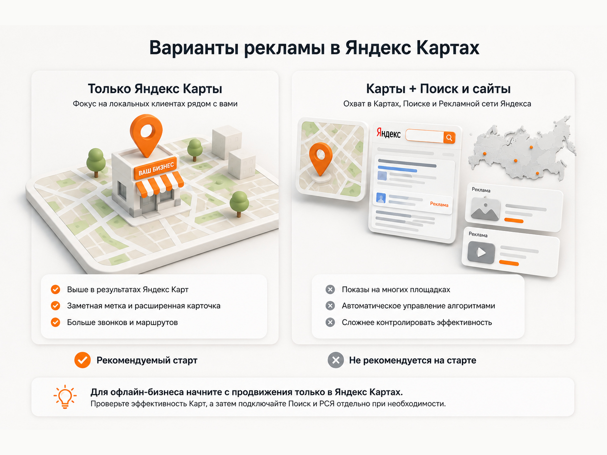
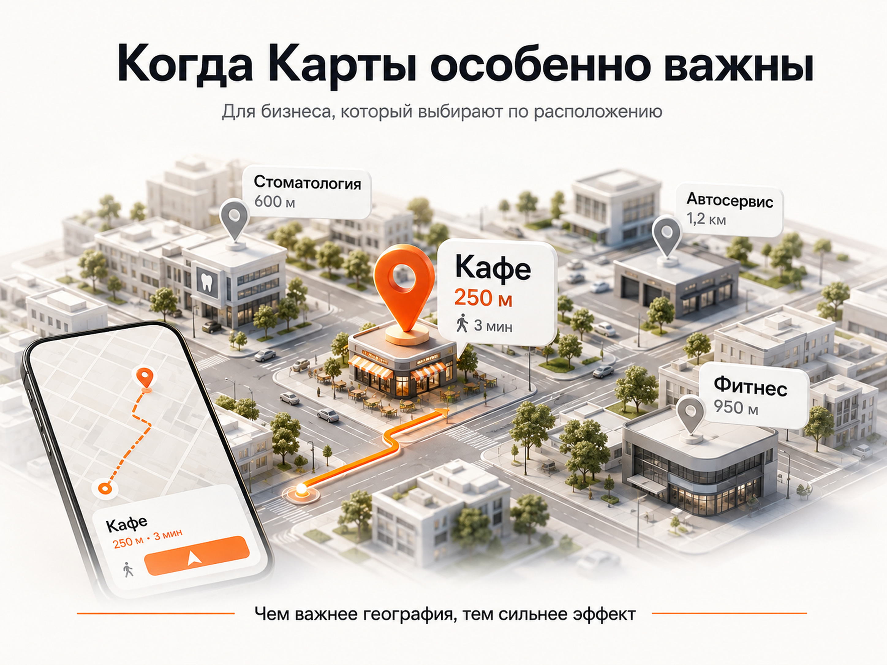
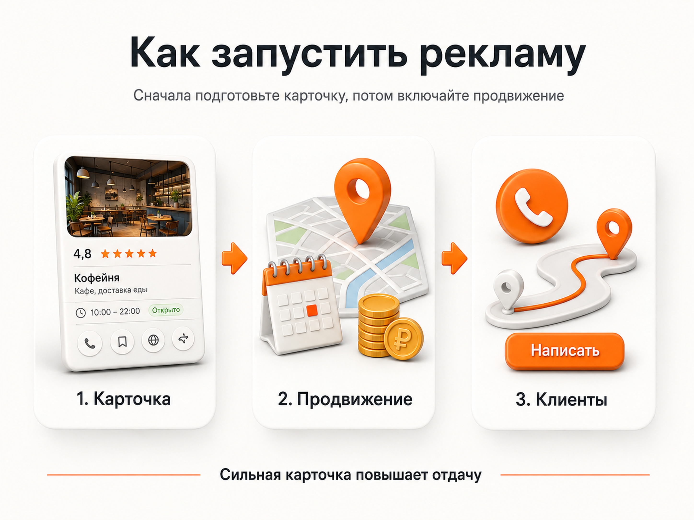

Блог о платном трафике
Реклама в Яндекс Картах: как настроить и сколько стоит
Для большинства офлайн-бизнесов реклама в Яндекс Картах - один из базовых инструментов продвижения. Если клиенту важно, насколько удобно до вас добираться, он часто выбирает компанию непосредственно на карте: смотрит расстояние, рейтинг, отзывы, фотографии, часы работы и строит маршрут.
Поэтому кафе, стоматологии, салоны красоты, медицинские центры, автосервисы, фитнес-клубы, магазины и другие локальные компании я бы обязательно тестировал в Картах.
При этом я не рекомендую автоматически покупать самый дорогой вариант продвижения. Если задача - получать клиентов именно из Карт, разумнее сначала запустить отдельное продвижение там. Дополнительную рекламу в Поиске и РСЯ при необходимости лучше настраивать отдельно в Яндекс Директе, где ее можно нормально контролировать.
Как работает реклама в Яндекс Картах
Обычная карточка компании в Яндекс Картах размещается бесплатно. Компания может указать адрес, телефон, режим работы, фотографии, товары и услуги и собирать отзывы.
Платное продвижение делает организацию заметнее. В зависимости от выбранного формата компания может:
- подниматься выше в результатах поиска в Картах;
- получить более заметную метку;
- показывать расширенную карточку;
- добавить товары и услуги;
- разместить акцию;
- добавить кнопку действия;
- появляться среди похожих организаций.
Первое место при этом никто не гарантирует. На позицию влияют соответствие запросу пользователя, расстояние до компании, качество карточки, рейтинг и рекламный бюджет.
Источник: https://yandex.ru/support/business-priority/ru/brand
Это принципиально отличается от обычной поисковой рекламы. Когда человек пишет в Поиске «стоматология имплантация», расстояние может быть лишь одним из факторов. Когда он открывает Карты и ищет «стоматология рядом», география становится частью самого выбора.
Какие варианты рекламы есть в Яндекс Картах
Форматов у Яндекса сейчас больше двух, но для небольшого офлайн-бизнеса я бы сводил выбор к двум основным сценариям.
| Вариант | Где идет реклама | Моя оценка |
|---|---|---|
| Продвижение только в Картах | Яндекс Карты и связанные размещения организации | Начинать лучше с него |
| Карты + Поиск и сайты | Карты, Поиск, РСЯ и другие площадки | Не подключал бы автоматически |
В Яндекс Бизнесе для сетевых компаний это разделено буквально на два формата: «Приоритет в Картах» и «Реклама на Поиске и сайтах». Во втором случае Яндекс автоматически создает объявления и показывает их в Поиске и на площадках Рекламной сети Яндекса.
Источник: https://yandex.ru/support/business-priority/ru/order
В Яндекс Директе возможности еще шире. В Единой перфоманс-кампании можно отдельно выбрать только «Карты и список организаций», не подключая Поиск и РСЯ.
Источник: https://yandex.ru/support/direct/ru/unified-performance-campaign/create-campaign
Именно такой принцип мне кажется наиболее логичным: если мы покупаем рекламу в Картах, сначала проверяем эффективность Карт.

Почему я не рекомендую сразу подключать рекламу на Поиске и сайтах
Проблема не в самой РСЯ. Рекламная сеть Яндекса может прекрасно работать.
Проблема в способе управления рекламой через автоматическую подписку Яндекс Бизнеса.
Яндекс сам создает объявления, определяет площадки и распределяет бюджет туда, где алгоритм ожидает больше целевых действий. Если Карты работают хуже, часть денег вообще может быть перенаправлена на Поиск или внешние площадки.
Источник: https://yandex.ru/support/business-priority/ru/order
Для владельца бизнеса это удобно: заплатил деньги и больше почти ничего не нужно настраивать.
Для специалиста по контекстной рекламе это, наоборот, серьезное ограничение. Я хочу понимать:
- где именно показывается реклама;
- какие направления получают бюджет;
- что происходит на Поиске;
- что происходит в РСЯ;
- какие аудитории работают;
- какие площадки расходуют деньги;
- какие объявления дают заявки;
- какого качества эти заявки.
В полноценном Яндекс Директе возможностей контроля значительно больше.
Поэтому я бы не переплачивал за пакет «Карты + автоматическая реклама», если цель бизнеса заключается именно в продвижении офлайн-точки.
Если нужен Поиск или РСЯ, их лучше запускать отдельными кампаниями.
Как настроить рекламу в Яндекс Директ в 2026 году
Кому реклама в Картах нужна в первую очередь
Самый понятный критерий - влияет ли местоположение на выбор клиента.
Представим, что человек ищет автомойку. Перед ним несколько вариантов с примерно одинаковыми рейтингами и ценами. Одна находится в двух километрах, вторая в семи, третья вообще на другом конце города.
Очень часто выбор уже сделан географией.
Такая же логика работает для:
- ресторанов и кафе;
- салонов красоты;
- стоматологий и клиник;
- автосервисов и шиномонтажей;
- фитнес-клубов;
- магазинов;
- сервисных центров;
- гостиниц;
- детских центров;
- ветеринарных клиник;
- бытовых услуг;
- других компаний с физической точкой.
Чем сильнее решение клиента зависит от расстояния и удобства маршрута, тем интереснее для бизнеса Яндекс Карты.

Для компании, которая продает промышленное оборудование по всей России, расположение офиса может вообще почти не иметь значения. В такой ситуации основной бюджет логичнее направлять в обычную контекстную рекламу.
Сколько стоит реклама в Яндекс Картах
Единой цены нет.
Стоимость Яндекс рассчитывает автоматически для конкретной компании. Она зависит от географии, вида деятельности, продолжительности размещения, количества потенциальных клиентов и прогноза спроса. Точную сумму можно увидеть при создании кампании.
Поэтому запрос «сколько стоит реклама в Яндекс Картах» нельзя корректно закрыть одной цифрой.
Стоматология в центре Москвы и небольшой автосервис в региональном городе получат разные условия.
В Рекламной подписке Яндекс также может предлагать несколько уровней бюджета:
- минимальный;
- оптимальный;
- максимальный;
- собственный бюджет в доступном диапазоне.
Для каждого варианта сервис показывает прогноз потенциального количества клиентов.
Источник: https://yandex.ru/support/business-priority/ru/order
Я бы не начинал с максимального бюджета. Сначала нужно понять, приносит ли конкретной точке само размещение в Картах целевые действия.
Что нужно сделать до запуска рекламы
Платить за продвижение пустой или плохо оформленной карточки - плохая идея.
До запуска я бы обязательно проверил профиль организации.
Правильно выбрать рубрики
Компания должна находиться по тем услугам, которые реально оказывает.
Не нужно добавлять десятки смежных категорий только ради дополнительного охвата. Карточка должна точно описывать бизнес.
Заполнить товары и услуги
Если пользователь выбирает между несколькими организациями прямо в Картах, ему желательно сразу дать хотя бы базовое представление об ассортименте и ценах.
Добавить нормальные фотографии
Особенно это важно для ресторанов, клиник, салонов, фитнес-клубов, гостиниц и магазинов.
Пользователь фактически знакомится с компанией еще до перехода на сайт.
Проверить контакты и график работы
Ошибочный телефон или старое расписание способны свести рекламный эффект к нулю.
Работать с отзывами
Рейтинг влияет на позиции рекламируемой организации. Кроме того, человек сам сравнивает рейтинг и отзывы соседних компаний перед выбором.
Источник: https://yandex.ru/support/business-priority/ru/brand
Большой бюджет не заменяет нормальную карточку.
Как настроить рекламу в Яндекс Картах
Для небольшой компании есть два основных пути: Яндекс Бизнес и Яндекс Директ.
Вариант 1. Через Яндекс Бизнес
Сначала нужно добавить организацию в Яндекс Бизнес или получить права на уже существующую карточку.
После этого:
- Откройте нужную организацию.
- Перейдите в раздел продвижения.
- Проверьте площадки, на которых будет идти реклама.
- Выберите продвижение в Картах.
- Укажите бюджет и доступный срок размещения.
- Добавьте товары, услуги, акции и кнопку действия, если они нужны.
- Оплатите кампанию.
Для владельца бизнеса это наиболее простой вариант.
Главное - не подключать автоматически более широкий пакет только потому, что интерфейс его предлагает. Сначала посмотрите, какие именно площадки входят в размещение.

Вариант 2. Через Яндекс Директ
Если рекламой занимается специалист, я бы рассматривал и этот вариант.
Сейчас в Единой перфоманс-кампании можно отдельно выбрать показы в Яндекс Картах и списке организаций. То есть Поиск и РСЯ подключать необязательно.
Источник: https://yandex.ru/support/direct/ru/unified-performance-campaign/create-campaign
Продвижение организации в Директе позволяет показываться выше в результатах Карт, получать заметную метку и дополнительные элементы карточки.
Источник: https://yandex.ru/support/direct/ru/company-ads/maps
Этот вариант удобен, когда Яндекс Директ уже используется как основной рекламный инструмент компании.
Можно ли рекламироваться в Картах без сайта
Да.
Для локального бизнеса сайт вообще не является обязательным условием такого продвижения. Пользователь может взаимодействовать непосредственно с карточкой организации:
- позвонить;
- построить маршрут;
- посмотреть фотографии;
- изучить услуги;
- открыть акцию;
- записаться;
- перейти по кнопке действия.
Для небольшого кафе, салона или мастерской карточка в Картах иногда становится полноценной посадочной страницей.
Это еще одна причина уделить ее оформлению столько же внимания, сколько обычному сайту.
Как оценивать эффективность рекламы в Картах
Я бы не оценивал кампанию по количеству просмотров карточки.
Бизнесу нужны действия.
В зависимости от проекта это могут быть:
- звонки;
- построенные маршруты;
- переходы на сайт;
- записи;
- нажатия на кнопку действия;
- обращения;
- реальные посещения точки.
В Яндекс Бизнесе доступна статистика просмотров, переходов, целевых клиентов и целевых действий. Для звонков можно использовать подменный номер.
Источник: https://yandex.ru/support/business-priority/ru/manage-order
Если часть клиентов переходит на сайт, дальше уже можно считать заявки и стоимость конверсии.
CPA в Яндекс Директе: что это и как считать стоимость конверсии
При этом у офлайн-бизнеса всегда остается проблема части неотслеживаемых продаж. Человек может увидеть организацию в Картах, построить маршрут, приехать и купить что-то без звонка или заявки.
Поэтому оценивать такой канал нужно вместе с реальной динамикой обращений и посещений точки.
Реклама в Картах или обычный Яндекс Директ
Я бы не противопоставлял эти инструменты.
Они работают с разными сценариями спроса.
Поисковый Директ перехватывает человека, когда он формулирует запрос.
РСЯ помогает находить аудиторию еще до прямого обращения.
Карты особенно хорошо работают в момент выбора конкретного места.
Для локального бизнеса нормальная схема может выглядеть так:
Карты работают отдельно на пользователей, для которых критична география.
Поиск работает отдельно на сформированный спрос.
РСЯ подключается отдельно, если она действительно нужна и показывает приемлемую эффективность.
Так гораздо проще понимать, откуда приходят клиенты и куда имеет смысл увеличивать бюджет.
Моя рекомендация
Если у бизнеса есть офлайн-точка и клиенты реально выбирают компанию по расположению, я бы обязательно тестировал платное продвижение в Яндекс Картах.
Начинать рекомендую с самого простого варианта, который дает приоритет именно в Картах.
Не вижу смысла сразу покупать более дорогой пакет только ради того, чтобы Яндекс автоматически добавил к Картам рекламу в Поиске и РСЯ. Если эти каналы нужны, их лучше отдельно настроить в Яндекс Директе и контролировать как самостоятельные источники трафика.
Сначала приведите в порядок карточку, подключите продвижение в Картах и посмотрите на звонки, маршруты, переходы и реальные обращения.
Если канал дает клиентов по приемлемой стоимости, бюджет можно постепенно увеличивать.
Частые вопросы
Можно ли запустить рекламу в Яндекс Картах через Директ?
Да. В Яндекс Директе можно продвигать организацию в Картах. В Единой перфоманс-кампании сейчас можно отдельно выбрать Яндекс Карты как место показа, не включая Поиск и РСЯ.
Сколько стоит реклама в Яндекс Картах?
Фиксированной цены нет. Яндекс рассчитывает стоимость индивидуально в зависимости от региона, категории бизнеса, срока размещения, конкуренции и прогнозируемого количества потенциальных клиентов.
Обязательно ли иметь сайт?
Нет. Пользователя можно привести непосредственно в карточку организации в Яндекс Картах.
Гарантирует ли реклама первое место?
Нет. На позицию влияют расстояние до пользователя, релевантность запросу, качество профиля, рейтинг и рекламный бюджет.
Что лучше выбрать - Яндекс Бизнес или Яндекс Директ?
Если нужен максимально простой запуск, подойдет Яндекс Бизнес. Если требуется более прозрачное управление рекламой и компания уже использует Директ, удобнее запускать отдельное продвижение организации через Яндекс Директ.